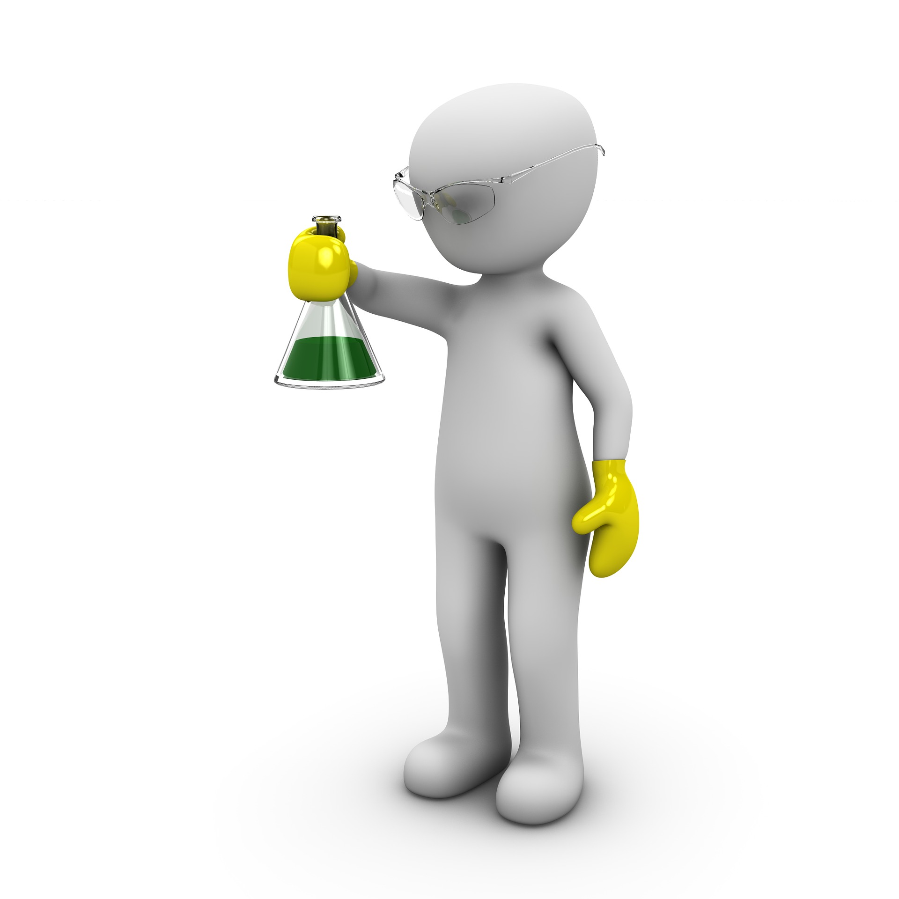
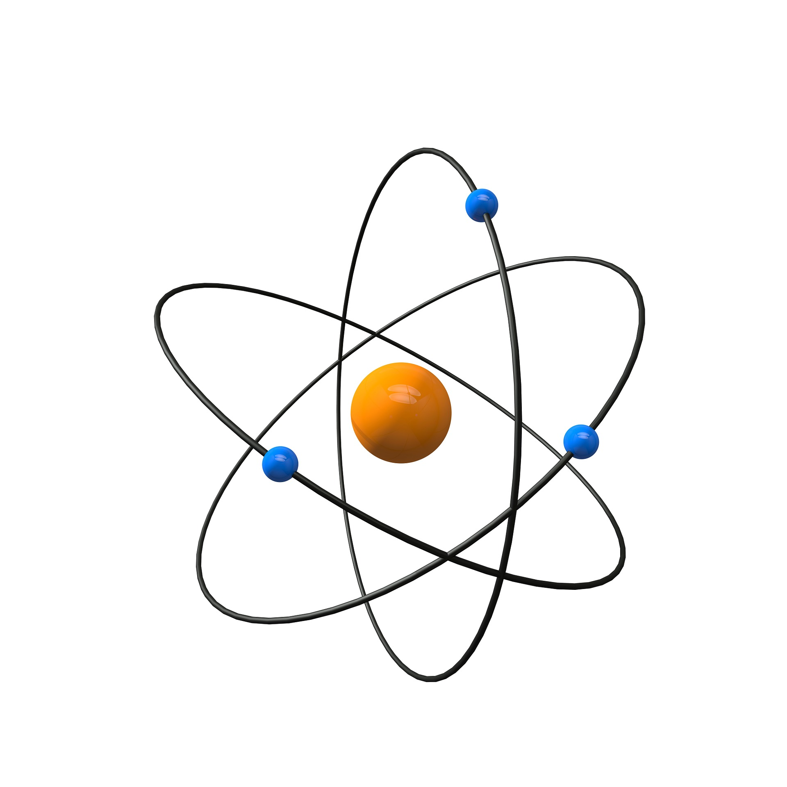

Welcome to Chemistry Hub
Chemistry is the study of matter and the changes it undergoes. Everything around us, from the air we breathe to the food we eat, is made up of chemicals. By understanding chemistry, we can better understand how the world works and how different substances interact with one another.
This website explores important chemistry concepts, including the structure of atoms, types of chemical reactions, and real-world applications. Whether you are new to chemistry or looking to review key ideas, this site provides clear and useful information.
Chemical Reactions

Chemical reactions occur when substances interact to form new products. These reactions can release or absorb energy and often result in visible changes such as color shifts, temperature changes, or gas production.
Image source: Unsplash
Atomic Structure

Atoms are the basic units of matter. They consist of protons, neutrons, and electrons. Understanding atomic structure helps explain how elements bond and form compounds.
Image source: Unsplash
Introduction to Chemistry
Learn More
For additional learning resources, visit this educational website:
Khan Academy Chemistry